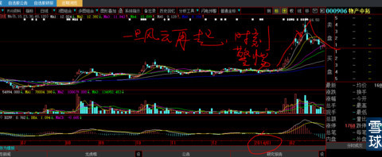
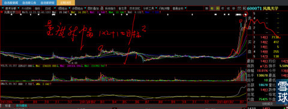
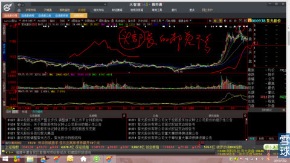
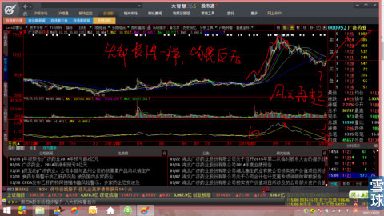
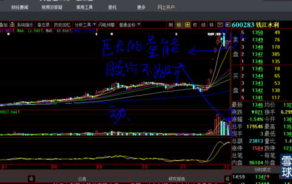

股价从相对山脚位置连续大阳线拉升，一般不会超过6—9天，极端的会有9—11天之间。所以要牢记，股价98%时间是震荡向上甚至是无效时间。
有了以上的思想基础，就比较好理解头部是如何成立的。
我们看看这些图形，基本就知道头部长的什么样子。
我们一定要从下面的举例感知：爆庄股一般都会有假突破，这是不以人的意志为转移的，最好的理解就是人性使然：让人们以为后面还会有前面的短期暴涨财富效应，庄家在这个时候才会有对手盘大肆派发，不然，盘中怎么会有连续不断、前赴后继的大单接盘呢？就像今天的新黄浦，没有连续的大阳线做出具有高度号召力的市场效应，股价一旦回头，成交立即萎缩，所以，用脚趾头想都知道它未来有多高。现在深藏其中的大资金根本还没有想要出局，所以现在还只是孜孜不倦的画历史性大图型。
以下只是贴图，再笨的人也明白爆庄股的头部长什么样子了吧？
共性就是：第一波吃筹阶段涨幅比较少，就像今天的”闰土股份“这个阶段或者”新华保险“2014年11月19日前半个月的阶段。然后开展第二波主升浪，也就是人们常常说的三浪三，主升浪往往是最长的，最短也是第一波的2倍，也就是1个量度升幅，正常的是2个，极端会有3个量度升幅。主升浪完成后，就会有5—9天的回落，第三波再开始创新高，但是，长度与第一波基本差不多稍微短一点。爆庄股的头部就是这样产生的。
你们会发现，所有的爆庄股建仓、拉升前洗盘下蹲、主升浪拉升，中间震仓、完成主升后第4浪回调、第5浪假突破创新高。整幅图形长得基本上都是大同小异。
是的，太阳底下就没有新鲜事，20几年来，A股一直这样玩的。




下图没有创新高的假突破，是因为圈那个地方放量太大，与当时市场气氛太好有关，庄家不需要费子弹花成本，就可以派发完手中的全部筹码。

能够在一次轮回中，涨幅5倍、10倍大牛股，基本与这类爆庄股走势无关。
我后面会专贴讲长庄股的头部是如何演化的。
所有那些被股市深深伤害、、个个满腔血海深仇的，参与类似这样假突破的半瓶子技术派，基本上都是被这样假突破坑杀的。
 |
逃命的技术之二：爆庄股主升浪后，基本都有假突破逃生的机会炒的是心 2015-01-18 13:01:04 |
Copyright © 1996-2014 SINA Corporation All Rights Reserved.